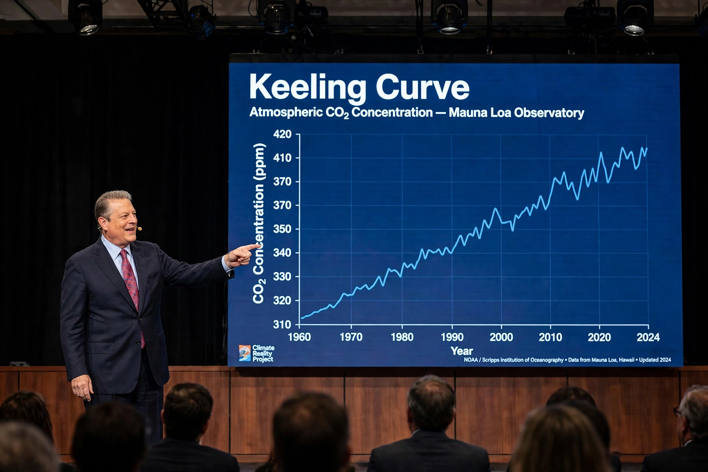

Al Gore
| Al Gore | |
|---|---|
| Born | 31 March 1948, Washington, D.C. |
| Office | 45th Vice President of the United States (1993–2001) |
| Party | Democratic |
| Awards | Nobel Peace Prize (2007, shared) |

Albert Arnold Gore Jr. (born 31 March 1948) is an American politician and environmentalist who served as the 45th vice president of the United States (1993–2001) under President Bill Clinton, and who became the world's most prominent campaigner on {L('Climate_change')} after leaving office.
Gore's film An Inconvenient Truth (2006) brought climate science to mass audiences, and in 2007 he shared the Nobel Peace Prize with the {L('IPCC','IPCC')}.
Political career
Gore served in the US House of Representatives and Senate from Tennessee before becoming vice president. In the 2000 presidential election he won the national popular vote but lost the Electoral College to George W. Bush after the Supreme Court halted Florida's recount — one of the closest and most contested elections in US history. As vice president he was also known for technology and government-reform initiatives.
Climate advocacy
Gore had studied climate science since his Harvard years and held early congressional hearings on the subject. His slideshow on global warming became the film An Inconvenient Truth, which won the Academy Award for Best Documentary. He founded the Climate Reality Project to train climate communicators, co-founded an investment firm focused on sustainability, and wrote books including Earth in the Balance (1992) and An Inconvenient Sequel (2017).
Critics have challenged aspects of his advocacy and his personal carbon footprint; supporters credit him with doing more than any other individual to put climate change on the global agenda. See {L('Global_warming')}.
See also: Climate change · Global warming · IPCC · United States